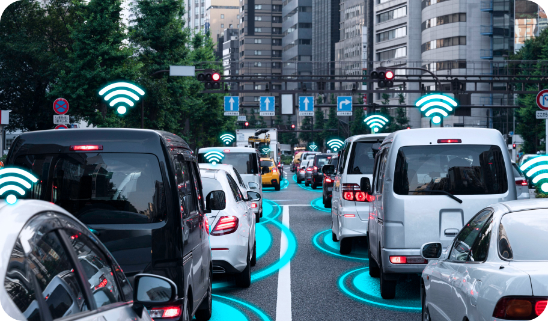

Общая информация

6+ человек
Уже пользуются нашей разработкой ежедневно, попробуй и ты. Это удобная возможность контролировать свои и чужие нарушения.


О проекте
Цель проекта "Безопасные дороги" - создание удобного и эффективного инструмента для повышения безопасности на дорогах и отслеживания нарушений правил дорожного движения.
Сервис "Безопасные дороги" предоставляет возможность сообщать о нарушениях ПДД, отправляя фото или видеоматериалы на проверку. После проверки, пользователь получает уведомление о результате. Также сервис позволяет узнавать о своих нарушениях, которые автоматически присылаются в личный кабинет или во вкладке "Мои нарушения".